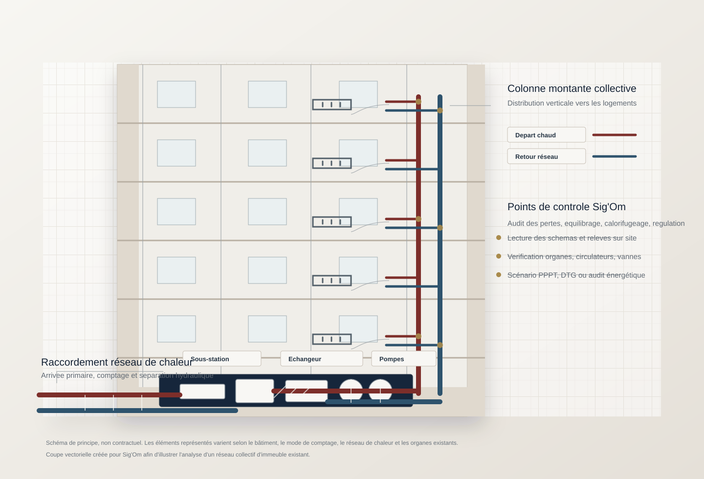
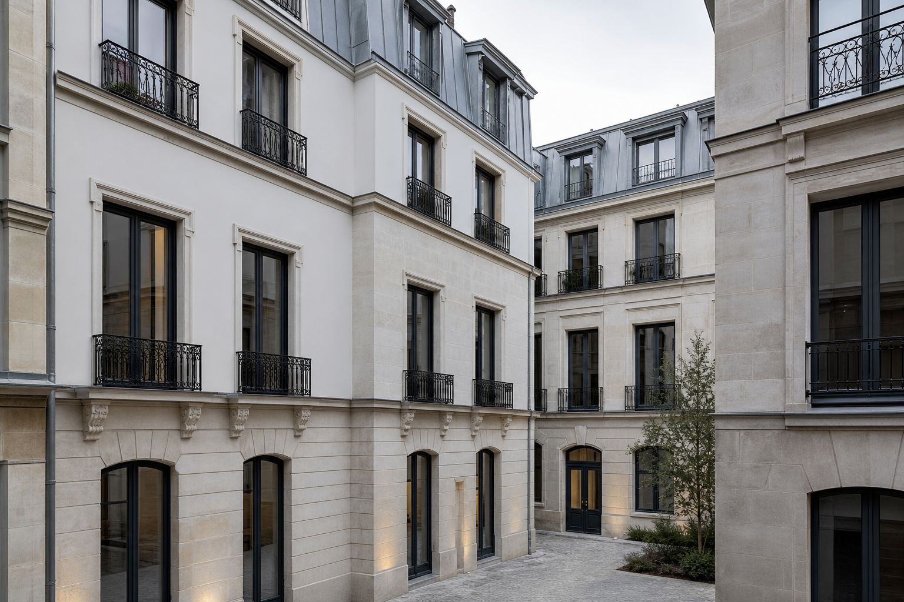

Bureau d'etudes techniques
Sig'Om
Rénovation, performance énergétique et ingénierie du bâti existant pour copropriétés, syndics, architectes, collectivités et entreprises.
Le bureau
Une approche calme, précise et vérifiable du bâti existant.
Sig'Om intervient lorsque le bâtiment demande une lecture rigoureuse : comprendre l'existant, mesurer les contraintes, hiérarchiser les travaux et documenter les décisions.
Le bureau accompagne les maîtres d'ouvrage dans les phases où la méthode compte autant que le résultat : audit bâtiment, audit énergétique copropriété, diagnostic technique global, plan pluriannuel de travaux, études techniques bâtiment, optimisation énergétique et assistance DCE.
Nos expertises
Des études techniques construites pour devenir des décisions.
Chaque mission est structurée pour relier diagnostic, coût, faisabilité, performance énergétique et trajectoire de rénovation.
Secteurs d'intervention
Des interlocuteurs exigeants, des contextes bâtis souvent complexes.
Sig'Om s'adresse aux organisations qui ont besoin de fiabiliser une décision technique avant d'engager une rénovation énergétique, un programme de maintenance ou une consultation d'entreprises.
Méthodologie
Voir le bâtiment comme un système, pas comme une addition de lots.
L'enveloppe, la ventilation, le chauffage, l'eau chaude sanitaire, les usages et les contraintes patrimoniales sont analysés ensemble.
-
Cadrage
Contexte, objectifs, documents disponibles, contraintes réglementaires, attentes du syndic, de l'architecte ou de la collectivité.
-
Relevé et analyse
Visite, lecture des réseaux, état de l'enveloppe, équipements, consommations, pathologies et usages réels.
-
Scénarios
Hypothèses techniques, coûts, priorités, gains énergétiques, risques, phasage et compatibilité avec l'exploitation.
-
Décision
Livrables clairs, arbitrages documentés, assistance DCE et accompagnement jusqu'à la consultation ou au vote.


Patrimoine existant
Rénover sans simplifier ce qui fait la valeur du bâtiment.
La performance énergétique ne doit pas écraser la compréhension architecturale, constructive et patrimoniale. Les meilleures décisions sont celles qui tiennent ensemble usage, technique, coût et pérennité.
Réalisations
Exemples de missions structurées pour le bâti existant.
Une architecture prête pour accueillir un CMS : chaque réalisation peut recevoir lieu, typologie, photos, indicateurs, livrables et phase du projet.
Actualités
Une veille sobre, utile et technique.
Le site peut publier des articles courts sur l'audit énergétique, le DTG, le PPPT, la rénovation énergétique et l'optimisation des installations collectives.
Contact
Initier une mission avec les bons documents, les bons interlocuteurs et le bon niveau d'exigence.
Pour un audit, un DTG, un PPPT, une étude technique bâtiment ou une assistance DCE, le premier échange permet de qualifier le périmètre et les contraintes.